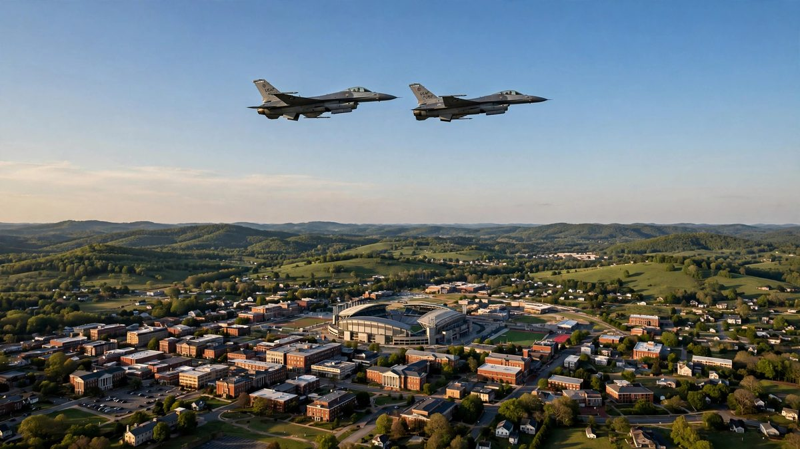

ट्रम्पको र्यालीका बेला क्लेमसनमाथि F-16 जेटले विमान रोके
राष्ट्रपति डोनाल्ड ट्रम्पको र्यालीका बेला बुधबार साँझ दक्षिण क्यारोलिनाको क्लेमसनमाथि प्रतिबन्धित हवाई क्षेत्रमा प्रवेश गरेको नागरिक विमानलाई लडाकु जेटले रोके। विमान नजिकैको हवाई मैदानमा सुरक्षित रूपमा अवतरण गरेको NORAD ले जनाएको छ।

मुख्य बुँदाहरू
- राष्ट्रपति डोनाल्ड ट्रम्पको चुनावी र्यालीका बेला प्रतिबन्धित हवाई क्षेत्रमा प्रवेश गरेपछि F-16 लडाकु जेटले बुधबार, अक्टोबर २१, २०२६ मा साँझ ५:३० बजे ET पछि लगत्तै दक्षिण क्यारोलिनाको क्लेमसनमाथि…
- उत्तर अमेरिकी एयरोस्पेस रक्षा कमान्ड, NORAD का नामले चिनिने निकायले विमानले राष्ट्रपतिको भ्रमण वरपर संघीय उड्डयन प्रशासनले तोकेको अस्थायी उडान प्रतिबन्ध उल्लङ्घन गरेको जनाएको छ। Newsmax र CBS News…
- राष्ट्रपतिको भ्रमणका लागि उडान प्रतिबन्ध लागू रहेको र र्याली चलिरहेका बेला क्लेमसन र वरपरको हवाई क्षेत्रमा त्यो लागू भएको NORAD ले जनाएको छ। प्रतिबन्ध उल्लङ्घन गर्ने पाइलटलाई अवतरण गर्दा संघीय…
राष्ट्रपति डोनाल्ड ट्रम्पको चुनावी र्यालीका बेला प्रतिबन्धित हवाई क्षेत्रमा प्रवेश गरेपछि F-16 लडाकु जेटले बुधबार, अक्टोबर २१, २०२६ मा साँझ ५:३० बजे ET पछि लगत्तै दक्षिण क्यारोलिनाको क्लेमसनमाथि एउटा नागरिक सामान्य उड्डयन विमान रोके।
उत्तर अमेरिकी एयरोस्पेस रक्षा कमान्ड, NORAD का नामले चिनिने निकायले विमानले राष्ट्रपतिको भ्रमण वरपर संघीय उड्डयन प्रशासनले तोकेको अस्थायी उडान प्रतिबन्ध उल्लङ्घन गरेको जनाएको छ। Newsmax र CBS News ले रिपोर्ट गरेको NORAD को वक्तव्यअनुसार, विमान नजिकैको हवाई मैदानमा सुरक्षित रूपमा अवतरण नगरेसम्म चालक दलले त्यसलाई निगरानीमा राखे।
NORAD ले के भन्यो
राष्ट्रपतिको भ्रमणका लागि उडान प्रतिबन्ध लागू रहेको र र्याली चलिरहेका बेला क्लेमसन र वरपरको हवाई क्षेत्रमा त्यो लागू भएको NORAD ले जनाएको छ। प्रतिबन्ध उल्लङ्घन गर्ने पाइलटलाई अवतरण गर्दा संघीय अधिकारीले भेट्न सक्ने र उनीहरूले कारबाहीको सामना गर्न सक्ने कमान्डले जनाएको छ। यो चेतावनी नै यस घटनाको केन्द्र हो, किनभने यो प्रणाली नागरिक पाइलटले उडान भर्नुअघि प्रतिबन्ध कहाँबाट सुरु हुन्छ र कहाँ टुङ्गिन्छ भन्ने थाहा पाउने कुरामा निर्भर गर्छ।
NORAD उत्तर अमेरिकाका लागि एयरोस्पेस चेतावनी र एयरोस्पेस नियन्त्रणको जिम्मेवारी पाएको संयुक्त राज्य अमेरिका र क्यानडाको संयुक्त कमान्ड हो। यसका चालक दलले यस्तै अवरोधका लागि तालिम लिन्छन्। सामान्य जवाफमा जेटले विमान पहिचान गर्छ, रेडियो सम्पर्कको प्रयास गर्छ, दृश्य सङ्केत प्रयोग गर्छ र विमान अवतरण नगरेसम्म त्यससँगै रहन्छ। क्लेमसनको जवाफले यही ढाँचा पछ्यायो।
क्लेमसनमा र्याली
ट्रम्पले क्लेमसन विश्वविद्यालयको T. Ed Garrison Arena मा सम्बोधन गरे। उनी स्वर्गीय सिनेटर Lindsey Graham की बहिनी, रिपब्लिकन सिनेटर Darline Graham को समर्थनमा आएका थिए। Darline Graham सिनेटमा पूर्ण कार्यकाल खोजिरहेकी छन्, र यो र्याली दक्षिण क्यारोलिनाको सिट जोगाउने उनको अभियानको हिस्सा थियो।
उनकी डेमोक्रेटिक प्रतिद्वन्द्वी Annie Andrews हुन्। यस प्रतिस्पर्धाले राष्ट्रिय ध्यान खिचेको छ, र राष्ट्रपतिको भ्रमणसँगै उनको यात्रामा साथ दिने सुरक्षा उपाय पनि आयो, जसमा रंगशाला वरपरको क्षेत्र ढाक्ने संघीय उड्डयन प्रशासनको उडान प्रतिबन्ध पनि थियो। संलग्न पाइलटका लागि विमान प्रतिबन्धित क्षेत्रमा प्रवेश गरेकै क्षणदेखि यो उडान संघीय मामिला बन्यो।
अस्थायी उडान प्रतिबन्ध राष्ट्रपतिको यात्राको नियमित हिस्सा हो। संघीय उड्डयन प्रशासनले सीमा, उचाइ र समय पहिल्यै प्रकाशित गर्छ। प्रतिबन्ध लागू रहेका बेला विशेष अनुमति नभएसम्म अधिकांश सामान्य उड्डयन यातायात बाहिरै रहनुपर्छ।
पछिल्ला महिनाको ढाँचा
क्लेमसनको अवरोध पछिल्ला महिनामा भएको एक मात्र घटना होइन। यस्तै अवरोध शनिबार, अक्टोबर १७, २०२६ मा Cincinnati नजिक भयो। सेप्टेम्बर २०२६ मा Chicago नजिक र अगस्ट २०२६ मा Ohio को Geneva नजिक पनि अवरोध भयो। मितिले गर्मीको अन्त्य र शरद ऋतुभर राष्ट्रपति यात्रासँग र त्यस्ता यात्राले सिर्जना गर्ने प्रतिबन्धसँग जोडिएको निरन्तर ढाँचा देखाउँछ।
प्रत्येक घटनाले उस्तै जवाफ ल्यायो। सैन्य जेट विमान पहिचान गर्न अघि बढ्यो, चालक दल त्यससँगै रह्यो र उडान अवतरणसँगै टुङ्गियो। क्लेमसनमा विमान नजिकैको हवाई मैदानमा सुरक्षित रूपमा अवतरण गरेको NORAD ले जनाएको छ।
अब के हुन्छ
NORAD ले उडान गर्नुअघि संघीय उड्डयन प्रशासनका Notices to Airmen जाँच गर्न पाइलटलाई आग्रह गरेको छ। ती सूचनामा राष्ट्रपति यात्रा वरपर लागू हुने समय र सीमासहित अस्थायी उडान प्रतिबन्ध सूचीबद्ध हुन्छ। जमिनमा केही मिनेटको जाँचले हावामा हुने अवरोध र अवतरणपछि हुने कारबाहीको मुद्दा रोक्न सक्छ।
दक्षिण क्यारोलिनामा उडान योजना बनाइरहेका पाइलटका लागि बुधबारको पाठ स्पष्ट छ। उडानअघि सूचना जाँच गर्नुहोस्, प्रकाशित प्रतिबन्ध क्षेत्रबाट टाढा रहनुहोस् र अनुमति बिना विमान त्यस्तो क्षेत्रमा प्रवेश गरे छिटो सैन्य जवाफको अपेक्षा गर्नुहोस्।
स्रोतहरू
Newsmax: ट्रम्पको र्यालीका बेला क्लेमसनमाथि F-16 जेटले विमान रोके, अक्टोबर २२, २०२६ रिपोर्ट: ट्रम्पको र्यालीका बेला दक्षिण क्यारोलिनामाथि लडाकु जेटले विमान रोके
समयरेखा
- August 2026Ohio को Geneva नजिक यस्तै अवरोध हुन्छ।
- September 2026Chicago नजिक यस्तै अवरोध हुन्छ।
- Oct 17, 2026शनिबार Cincinnati नजिक यस्तै अवरोध हुन्छ।
- Oct 21, 2026राष्ट्रपति डोनाल्ड ट्रम्पको र्यालीका बेला साँझ ५:३० बजे ET पछि लगत्तै दक्षिण क्यारोलिनाको क्लेमसनमाथि F-16 लडाकु जेटले नागरिक विमान रोक्छ।